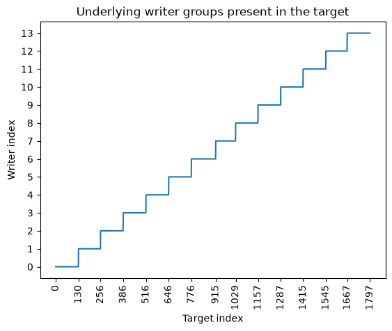

Cross-validation strategies#
The previous notebooks introduced how to evaluate a model and how to create a specific preprocessing pipeline depending on the last model.
In this notebook, we will look more closely at some details of the cross-validation strategies and at some of the pitfalls that we can encounter.
Let’s take the iris dataset and evaluate a logistic regression model.
Environment setup#
Run this cell in JupyterLite. A local installation already provides these packages.
%pip install -q "scikit-learn~=1.9.1" "skrub~=0.11.0" pandas matplotlib
/home/runner/work/sgap-2026/sgap-2026/.pixi/envs/default/bin/python: No module named pip
Note: you may need to restart the kernel to use updated packages.
from sklearn.datasets import load_iris
df, target = load_iris(as_frame=True, return_X_y=True)
df
| sepal length (cm) | sepal width (cm) | petal length (cm) | petal width (cm) | |
|---|---|---|---|---|
| 0 | 5.1 | 3.5 | 1.4 | 0.2 |
| 1 | 4.9 | 3.0 | 1.4 | 0.2 |
| 2 | 4.7 | 3.2 | 1.3 | 0.2 |
| 3 | 4.6 | 3.1 | 1.5 | 0.2 |
| 4 | 5.0 | 3.6 | 1.4 | 0.2 |
| ... | ... | ... | ... | ... |
| 145 | 6.7 | 3.0 | 5.2 | 2.3 |
| 146 | 6.3 | 2.5 | 5.0 | 1.9 |
| 147 | 6.5 | 3.0 | 5.2 | 2.0 |
| 148 | 6.2 | 3.4 | 5.4 | 2.3 |
| 149 | 5.9 | 3.0 | 5.1 | 1.8 |
150 rows × 4 columns
target
0 0
1 0
2 0
3 0
4 0
..
145 2
146 2
147 2
148 2
149 2
Name: target, Length: 150, dtype: int64
from sklearn.linear_model import LogisticRegression
from sklearn.pipeline import make_pipeline
from sklearn.preprocessing import StandardScaler
logistic_regression = make_pipeline(StandardScaler(), LogisticRegression())
logistic_regression
Pipeline(steps=[('standardscaler', StandardScaler()),
('logisticregression', LogisticRegression())])In a Jupyter environment, please rerun this cell to show the HTML representation or trust the notebook. On GitHub, the HTML representation is unable to render, please try loading this page with nbviewer.org.
Parameters
Parameters
Parameters
Exercise#
Evaluate the previous LogisticRegression model using a 3-fold cross-validation
(i.e. sklearn.model_selection.KFold). What do you observe?
We observe that the training score is always zero, which is really surprising. We can check the target to understand why.
We can use a StratifiedKFold object to ensure that the class distribution is
preserved in each fold. A side effect will be that all classes will be present in the
training set and testing set.
import pandas as pd
from sklearn.model_selection import KFold, StratifiedKFold, cross_validate
cv = StratifiedKFold(n_splits=3)
cv_results = cross_validate(logistic_regression, df, target, cv=cv, return_train_score=True)
cv_results = pd.DataFrame(cv_results)
cv_results[["train_score", "test_score"]]
| train_score | test_score | |
|---|---|---|
| 0 | 0.94 | 0.98 |
| 1 | 0.98 | 0.96 |
| 2 | 0.97 | 0.96 |
for cv_fold_idx, (train_indices, test_indices) in enumerate(cv.split(df, target)):
print(f"Fold {cv_fold_idx}:\n")
print(f"Class counts on the train set:\n" f"{target.iloc[train_indices].value_counts()}")
print(f"Class counts on the test set:\n" f"{target.iloc[test_indices].value_counts()}")
print()
Fold 0:
Class counts on the train set:
target
2 34
0 33
1 33
Name: count, dtype: int64
Class counts on the test set:
target
0 17
1 17
2 16
Name: count, dtype: int64
Fold 1:
Class counts on the train set:
target
1 34
0 33
2 33
Name: count, dtype: int64
Class counts on the test set:
target
0 17
2 17
1 16
Name: count, dtype: int64
Fold 2:
Class counts on the train set:
target
0 34
1 33
2 33
Name: count, dtype: int64
Class counts on the test set:
target
1 17
2 17
0 16
Name: count, dtype: int64
This is particularly useful when we have imbalanced classes. Let’s check the class distribution of the breast cancer dataset.
from sklearn.datasets import load_breast_cancer
df, target = load_breast_cancer(as_frame=True, return_X_y=True)
target.value_counts(normalize=True)
target
1 0.627417
0 0.372583
Name: proportion, dtype: float64
Here, we see that the proportion of the two classes is not equal. We can check the
class distribution in each fold using a KFold object.
cv = KFold(n_splits=3, shuffle=True, random_state=0)
for cv_fold_idx, (train_indices, test_indices) in enumerate(cv.split(df, target)):
print(f"Fold {cv_fold_idx}:\n")
print(
"Class counts on the train set:\n"
f"{target.iloc[train_indices].value_counts(normalize=True)}\n"
)
print(f"Class counts on the test set:\n" f"{target.iloc[test_indices].value_counts(True)}")
print()
Fold 0:
Class counts on the train set:
target
1 0.620053
0 0.379947
Name: proportion, dtype: float64
Class counts on the test set:
target
1 0.642105
0 0.357895
Name: proportion, dtype: float64
Fold 1:
Class counts on the train set:
target
1 0.62533
0 0.37467
Name: proportion, dtype: float64
Class counts on the test set:
target
1 0.631579
0 0.368421
Name: proportion, dtype: float64
Fold 2:
Class counts on the train set:
target
1 0.636842
0 0.363158
Name: proportion, dtype: float64
Class counts on the test set:
target
1 0.608466
0 0.391534
Name: proportion, dtype: float64
We observe that the class distribution is not preserved in each fold. We can use a
StratifiedKFold object to ensure that the class distribution is preserved in each
fold.
cv = StratifiedKFold(n_splits=3)
for cv_fold_idx, (train_indices, test_indices) in enumerate(cv.split(df, target)):
print(f"Fold {cv_fold_idx}:\n")
print(
"Class counts on the train set:\n"
f"{target.iloc[train_indices].value_counts(normalize=True)}\n"
)
print(f"Class counts on the test set:\n" f"{target.iloc[test_indices].value_counts(True)}")
print()
Fold 0:
Class counts on the train set:
target
1 0.627968
0 0.372032
Name: proportion, dtype: float64
Class counts on the test set:
target
1 0.626316
0 0.373684
Name: proportion, dtype: float64
Fold 1:
Class counts on the train set:
target
1 0.627968
0 0.372032
Name: proportion, dtype: float64
Class counts on the test set:
target
1 0.626316
0 0.373684
Name: proportion, dtype: float64
Fold 2:
Class counts on the train set:
target
1 0.626316
0 0.373684
Name: proportion, dtype: float64
Class counts on the test set:
target
1 0.62963
0 0.37037
Name: proportion, dtype: float64
Now, let’s check the documentation of the cross_validate() function to see if this
function already provides a way to stratify the data.
help(cross_validate)
Help on function cross_validate in module sklearn.model_selection._validation:
cross_validate(
estimator,
X,
y=None,
*,
groups=None,
scoring=None,
cv=None,
n_jobs=None,
verbose=0,
params=None,
pre_dispatch='2*n_jobs',
return_train_score=False,
return_estimator=False,
return_indices=False,
error_score=nan
)
Evaluate metric(s) by cross-validation and also record fit/score times.
Read more in the :ref:`User Guide <multimetric_cross_validation>`.
Parameters
----------
estimator : estimator object implementing 'fit'
The object to use to fit the data.
X : {array-like, sparse matrix} of shape (n_samples, n_features)
The data to fit. Can be for example a list, or an array.
y : array-like of shape (n_samples,) or (n_samples, n_outputs), default=None
The target variable to try to predict in the case of
supervised learning.
groups : array-like of shape (n_samples,), default=None
Group labels for the samples used while splitting the dataset into
train/test set. Only used in conjunction with a "Group" :term:`cv`
instance (e.g., :class:`GroupKFold`).
.. versionchanged:: 1.4
``groups`` can only be passed if metadata routing is not enabled
via ``sklearn.set_config(enable_metadata_routing=True)``. When routing
is enabled, pass ``groups`` alongside other metadata via the ``params``
argument instead. E.g.:
``cross_validate(..., params={'groups': groups})``.
scoring : str, callable, list, tuple, or dict, default=None
Strategy to evaluate the performance of the `estimator` across cross-validation
splits.
If `scoring` represents a single score, one can use:
- a single string (see :ref:`scoring_string_names`);
- a callable (see :ref:`scoring_callable`) that returns a single value.
- `None`, the `estimator`'s
:ref:`default evaluation criterion <scoring_api_overview>` is used.
If `scoring` represents multiple scores, one can use:
- a list or tuple of unique strings;
- a callable returning a dictionary where the keys are the metric
names and the values are the metric scores;
- a dictionary with metric names as keys and callables as values.
See :ref:`multimetric_grid_search` for an example.
cv : int, cross-validation generator or an iterable, default=None
Determines the cross-validation splitting strategy.
Possible inputs for cv are:
- None, to use the default 5-fold cross validation,
- int, to specify the number of folds in a `(Stratified)KFold`,
- :term:`CV splitter`,
- an iterable yielding (train, test) splits as arrays of indices.
For int/None inputs, if the estimator is a classifier and ``y`` is
either binary or multiclass, :class:`StratifiedKFold` is used. In all
other cases, :class:`KFold` is used. These splitters are instantiated
with `shuffle=False` so the splits will be the same across calls.
Refer :ref:`User Guide <cross_validation>` for the various
cross-validation strategies that can be used here.
.. versionchanged:: 0.22
``cv`` default value if None changed from 3-fold to 5-fold.
n_jobs : int, default=None
Number of jobs to run in parallel. Training the estimator and computing
the score are parallelized over the cross-validation splits.
``None`` means 1 unless in a :obj:`joblib.parallel_backend` context.
``-1`` means using all processors. See :term:`Glossary <n_jobs>`
for more details.
verbose : int, default=0
The verbosity level.
params : dict, default=None
Parameters to pass to the underlying estimator's ``fit``, the scorer,
and the CV splitter.
.. versionadded:: 1.4
pre_dispatch : int or str, default='2*n_jobs'
Controls the number of jobs that get dispatched during parallel
execution. Reducing this number can be useful to avoid an
explosion of memory consumption when more jobs get dispatched
than CPUs can process. This parameter can be:
- An int, giving the exact number of total jobs that are spawned
- A str, giving an expression as a function of n_jobs, as in '2*n_jobs'
return_train_score : bool, default=False
Whether to include train scores.
Computing training scores is used to get insights on how different
parameter settings impact the overfitting/underfitting trade-off.
However computing the scores on the training set can be computationally
expensive and is not strictly required to select the parameters that
yield the best generalization performance.
.. versionadded:: 0.19
.. versionchanged:: 0.21
Default value was changed from ``True`` to ``False``
return_estimator : bool, default=False
Whether to return the estimators fitted on each split.
.. versionadded:: 0.20
return_indices : bool, default=False
Whether to return the train-test indices selected for each split.
.. versionadded:: 1.3
error_score : 'raise' or numeric, default=np.nan
Value to assign to the score if an error occurs in estimator fitting.
If set to 'raise', the error is raised.
If a numeric value is given, FitFailedWarning is raised.
.. versionadded:: 0.20
Returns
-------
scores : dict of float arrays of shape (n_splits,)
Array of scores of the estimator for each run of the cross validation.
A dict of arrays containing the score/time arrays for each scorer is
returned. The possible keys for this ``dict`` are:
``test_score``
The score array for test scores on each cv split.
Suffix ``_score`` in ``test_score`` changes to a specific
metric like ``test_r2`` or ``test_auc`` if there are
multiple scoring metrics in the scoring parameter.
``train_score``
The score array for train scores on each cv split.
Suffix ``_score`` in ``train_score`` changes to a specific
metric like ``train_r2`` or ``train_auc`` if there are
multiple scoring metrics in the scoring parameter.
This is available only if ``return_train_score`` parameter
is ``True``.
``fit_time``
The time for fitting the estimator on the train
set for each cv split.
``score_time``
The time for scoring the estimator on the test set for each
cv split. (Note: time for scoring on the train set is not
included even if ``return_train_score`` is set to ``True``).
``estimator``
The estimator objects for each cv split.
This is available only if ``return_estimator`` parameter
is set to ``True``.
``indices``
The train/test positional indices for each cv split. A dictionary
is returned where the keys are either `"train"` or `"test"`
and the associated values are a list of integer-dtyped NumPy
arrays with the indices. Available only if `return_indices=True`.
See Also
--------
cross_val_score : Run cross-validation for single metric evaluation.
cross_val_predict : Get predictions from each split of cross-validation for
diagnostic purposes.
sklearn.metrics.make_scorer : Make a scorer from a performance metric or
loss function.
Examples
--------
>>> from sklearn import datasets, linear_model
>>> from sklearn.model_selection import cross_validate
>>> diabetes = datasets.load_diabetes()
>>> X = diabetes.data[:150]
>>> y = diabetes.target[:150]
>>> lasso = linear_model.Lasso()
Single metric evaluation using ``cross_validate``
>>> cv_results = cross_validate(lasso, X, y, cv=3)
>>> sorted(cv_results.keys())
['fit_time', 'score_time', 'test_score']
>>> cv_results['test_score']
array([0.3315057 , 0.08022103, 0.03531816])
Multiple metric evaluation using ``cross_validate``
(please refer the ``scoring`` parameter doc for more information)
>>> scores = cross_validate(lasso, X, y, cv=3,
... scoring=('r2', 'neg_mean_squared_error'),
... return_train_score=True)
>>> print(scores['test_neg_mean_squared_error'])
[-3635.5 -3573.3 -6114.7]
>>> print(scores['train_r2'])
[0.28009951 0.3908844 0.22784907]
Now, we will look at the notion of groups in cross-validation. We will use the
digits dataset and group the samples by writer.
from sklearn.datasets import load_digits
df, target = load_digits(return_X_y=True)
We create a simple model that is a logistic regression model with a scaling of the data.
from sklearn.preprocessing import MinMaxScaler
logistic_regression = make_pipeline(MinMaxScaler(), LogisticRegression())
Exercise#
Evaluate the model and compare two strategies:
using a
KFoldobject with 13 splits without shuffling the data;using a
KFoldobject with 13 splits with shuffling the data.
What do you observe? What are the causes of the differences?
Here, we provide a groups array that gives the writer ID for each sample.
from itertools import count
import numpy as np
# Define the lower and upper bounds of sample indices
# for each writer.
writer_boundaries = [
0,
130,
256,
386,
516,
646,
776,
915,
1029,
1157,
1287,
1415,
1545,
1667,
1797,
]
groups = np.zeros_like(target)
lower_bounds = writer_boundaries[:-1]
upper_bounds = writer_boundaries[1:]
for group_id, lb, up in zip(count(), lower_bounds, upper_bounds):
groups[lb:up] = group_id
import matplotlib.pyplot as plt
plt.plot(groups)
plt.yticks(np.unique(groups))
plt.xticks(writer_boundaries, rotation=90)
plt.xlabel("Target index")
plt.ylabel("Writer index")
_ = plt.title("Underlying writer groups present in the target")

We can use this information to properly evaluate our model. We need to use the
GroupKFold object and pass the groups parameter to the cross_validate() function.
from sklearn.model_selection import GroupKFold
cv = GroupKFold(n_splits=13)
cv_results = cross_validate(logistic_regression, df, target, groups=groups, cv=cv)
print(
f"Mean test score: {cv_results['test_score'].mean():.3f} +/- "
f"{cv_results['test_score'].std():.3f}"
)
Mean test score: 0.930 +/- 0.035
We observe that the mean test score is even lower but certainly closer to the true performance of the model.